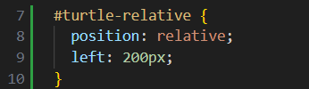
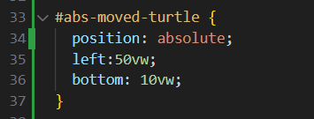
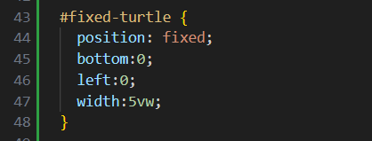

CSS has a five different types of positions. These are:
- Static: The default position.
- Relative
- Absolute
- Fixed
- Sticky
In this blog post, we will be focusing on Relative, Absolute and Fixed Positioning
Relative Positioning
Relative positioning allows us to position a part of our page('element') based on the location it would normally be. Take this image below:

Because everything on our page has been centered, it sits in the middle of the page.
However, if we add some CSS code, we can move it, based on where it is normally.
Let's apply some styling to the turtle.
The first part "#turtle-relative" is what identifies this particular turtle images, out of the countless others scattered around on this site. Then, our curly brackets contain the 'directions'. Our first direction "position: relative", is self explanatory, it tells the turtle image the type of positioning (relative). Next, "left:200px", tells the turtle is should move, 200px from the left. Keep in mind, it is not moving TO the left.
Absolute Positioning
Absolute positioning allows us to position an element based on its 'ancestor'. This is a connected element that it might sit inside. If we do not have one of these, it will position itself relative to the body of our document, as all our elements sit inside this.
For this example, we will put the turtle in a box.
Let's apply some styling to the turtle.
Once again, we have given the turtle an identifier. Now, we have a few differences, the position is now "absolute". Once again, the turtle has moved relative from the BOTTOM and LEFT of the box. You may notice we haven't used pixels, rather vw, this allows us to move it based on the viewing window, or our screen.
Our turtle has escaped! It has moved relative to the box.
Fixed Positioning
Finally, our last type of positioning. With this type, our elements are position based on our window('viewport').
This turtle has been with us the whole time, hopefully you noticed it sitting in the bottom left of the screen, notice how even if you scroll, it hasn't moved.
Here's our styling for this turtle.
Same as before, we've identified this turtle, and given it a fixed position. However, the bottom and left values are based on the bottom and left of our window. Since these are both 0, the turtle sits in the bottom left corner of our page. Finally, the "width:5vw". We wouldn't want a big turtle stopping you from reading the page, so it's been sized to take up 5% of our viewport.